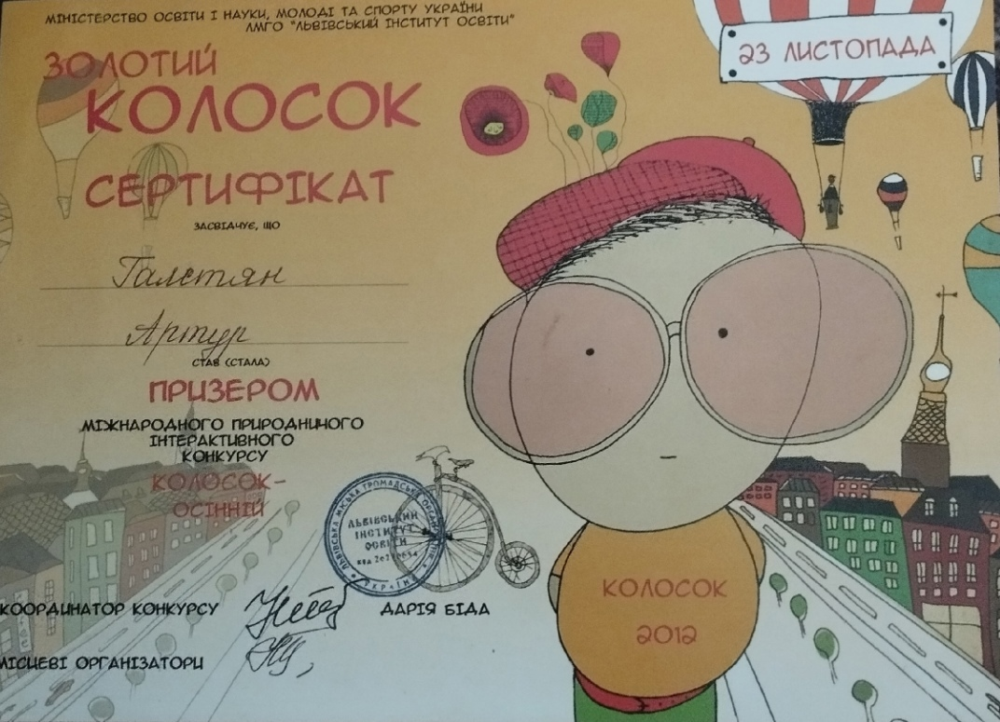

Здравствуйте посетители сайта, вас приветствует Галстян Артур студент 3 курса Севастопольского техникума «СТЭТ»
Обо Мне
Я в 2020 году окончил школу № 44 и в данный момент обучаюсь в Севастопольском техникуме «СТЭТ», основные качества которых я придерживаюсь это быть доброжелательным и общительным. Вредных привычек не имею и стараюсь во всем помогать товарищам и друзьям.
Достижения

Освоение профессиональных компетенций


Гостевая книга
arturshow5741@gmail.com